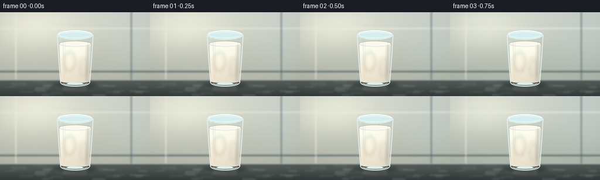
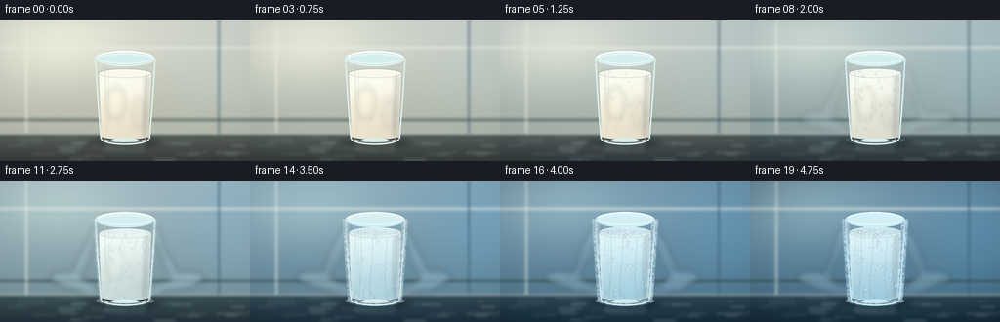

CODING AGENTS AS PIXEL WORLD MODELS
traex/DeepSeek-V4.1-Flash · phygen_093
点击播放 · 原生 RGB 像素
逐轮保存的候选
回放视频、检查图与代码变化。
每份候选均可单独播放。实际图片检查记录在下方工具轨迹中。
候选 01播放与检查图
点击播放 · 原生 RGB 像素


展开代码变化
--- 上一保存版本
+++ 本次保存版本
@@ -0,0 +1,697 @@
+from pathlib import Path
+import math
+import random
+
+import numpy as np
+from PIL import Image, ImageChops, ImageDraw, ImageFilter
+
+from artifact_io import save
+
+
+CASE_DIR = Path(__file__).resolve().parent
+W, H, N, FPS = 256, 144, 20, 4.0
+S = 4
+CW, CH = W * S, H * S
+
+
+def smoothstep(edge0, edge1, value):
+ x = np.clip((value - edge0) / (edge1 - edge0), 0.0, 1.0)
+ return x * x * (3.0 - 2.0 * x)
+
+
+def mix(a, b, t):
+ return tuple(int(round(a[i] + (b[i] - a[i]) * t)) for i in range(len(a)))
+
+
+def px(value):
+ return int(round(value * S))
+
+
+def rgba(color, alpha):
+ return (int(color[0]), int(color[1]), int(color[2]), int(np.clip(alpha, 0, 255)))
+
+
+def layer():
+ return Image.new("RGBA", (CW, CH), (0, 0, 0, 0))
+
+
+def soft_ellipse(target, box, color, blur=0.0):
+ draw = ImageDraw.Draw(target, "RGBA")
+ draw.ellipse(tuple(px(v) for v in box), fill=color)
+ if blur:
+ target.alpha_composite(target.filter(ImageFilter.GaussianBlur(px(blur))))
+
+
+def glass_half_width(y):
+ q = np.clip((y - 38.0) / 84.0, 0.0, 1.0)
+ return 30.6 - 5.8 * q + 0.34 * math.sin(q * math.pi)
+
+
+def glass_edge_points(side):
+ points = []
+ for y in np.linspace(38.5, 121.0, 96):
+ half = glass_half_width(float(y))
+ x = 128.0 - half if side == "left" else 128.0 + half
+ points.append((px(x), px(float(y))))
+ return points
+
+
+def add_glow(target, center, radius, color, strength=1.0, blur=0.0):
+ cx, cy = center
+ overlay = layer()
+ draw = ImageDraw.Draw(overlay, "RGBA")
+ for i in range(8, 0, -1):
+ rr = radius * i / 8.0
+ a = color[3] * (1.0 - i / 9.0) * strength
+ draw.ellipse(
+ (px(cx - rr), px(cy - rr * 0.72), px(cx + rr), px(cy + rr * 0.72)),
+ fill=rgba(color[:3], a),
+ )
+ if blur:
+ overlay = overlay.filter(ImageFilter.GaussianBlur(px(blur)))
+ target.alpha_composite(overlay)
+
+
+def make_background(cool, deep):
+ top = mix((216, 219, 208), (134, 167, 184), cool)
+ top = mix(top, (102, 138, 158), deep * 0.45)
+ bottom = mix((173, 177, 162), (82, 118, 136), cool)
+ bottom = mix(bottom, (58, 91, 111), deep * 0.42)
+
+ yy = np.linspace(0.0, 1.0, CH, dtype=np.float32)[:, None]
+ xx = np.linspace(0.0, 1.0, CW, dtype=np.float32)[None, :]
+ top_arr = np.array(top, dtype=np.float32)[None, None, :]
+ bottom_arr = np.array(bottom, dtype=np.float32)[None, None, :]
+ arr = top_arr * (1.0 - yy[:, :, None]) + bottom_arr * yy[:, :, None]
+ arr = np.broadcast_to(arr, (CH, CW, 3)).copy()
+
+ # Broad studio light from the upper left, plus a cool rim from the right.
+ glow = np.exp(-(((xx - 0.22) / 0.30) ** 2 + ((yy - 0.18) / 0.28) ** 2))
+ arr += glow[:, :, None] * np.array([27, 25, 18], dtype=np.float32)
+ rim = np.exp(-(((xx - 0.94) / 0.22) ** 2 + ((yy - 0.32) / 0.52) ** 2))
+ arr += rim[:, :, None] * np.array([-6, 5, 13], dtype=np.float32) * (0.35 + 0.65 * cool)
+
+ # The lower band is a brushed metal work surface.
+ table_top = 116.0 / H
+ table = yy >= table_top
+ t = np.clip((yy - table_top) / (1.0 - table_top), 0.0, 1.0)
+ table_color = (
+ np.array(mix((92, 99, 92), (49, 71, 82), cool), dtype=np.float32)[None, None, :] * (1.0 - t[:, :, None])
+ + np.array(mix((55, 61, 60), (27, 46, 58), cool), dtype=np.float32)[None, None, :] * t[:, :, None]
+ )
+ arr = np.where(table[:, :, None], table_color, arr)
+
+ bg = Image.fromarray(np.clip(arr, 0, 255).astype(np.uint8), "RGB").convert("RGBA")
+ draw = ImageDraw.Draw(bg, "RGBA")
+
+ # Soft out-of-focus wall panels and shelf lines.
+ draw.rectangle((px(0), px(27), px(W), px(28.4)), fill=rgba((235, 239, 229), 22 + 8 * cool))
+ draw.rectangle((px(0), px(101), px(W), px(102.4)), fill=rgba((55, 76, 78), 16))
+ draw.line((px(27), px(0), px(27), px(116)), fill=rgba((246, 245, 232), 12), width=px(1.2))
+ draw.line((px(224), px(0), px(224), px(116)), fill=rgba((61, 91, 105), 15), width=px(1.2))
+
+ # Table bevel, reflection band, and a few subdued brushed-metal marks.
+ draw.line((px(0), px(116.1), px(W), px(116.1)), fill=rgba((221, 229, 221), 55), width=px(1.0))
+ draw.line((px(0), px(118.2), px(W), px(118.2)), fill=rgba((33, 50, 56), 55), width=px(0.8))
+ rng = random.Random(44)
+ for _ in range(28):
+ x = rng.uniform(0, W)
+ y = rng.uniform(119.0, 143.0)
+ length = rng.uniform(6.0, 28.0)
+ draw.line(
+ (px(x), px(y), px(min(W, x + length)), px(y + rng.uniform(-0.4, 0.4))),
+ fill=rgba((184, 201, 198), rng.randint(5, 14)),
+ width=px(0.5),
+ )
+
+ bg = bg.filter(ImageFilter.GaussianBlur(px(1.55)))
+ return bg
+
+
+def draw_shadow_and_reflection(canvas, cool, deep):
+ shadow = layer()
+ draw = ImageDraw.Draw(shadow, "RGBA")
+ draw.ellipse(
+ (px(89), px(120.0), px(167), px(130.5)),
+ fill=rgba(mix((28, 34, 33), (9, 29, 42), cool), 92),
+ )
+ draw.ellipse((px(102), px(121.0), px(154), px(127.0)), fill=rgba((5, 19, 28), 70))
+ shadow = shadow.filter(ImageFilter.GaussianBlur(px(2.6)))
+ canvas.alpha_composite(shadow)
+
+ reflection = layer()
+ draw = ImageDraw.Draw(reflection, "RGBA")
+ draw.polygon(
+ [
+ (px(104), px(121)),
+ (px(152), px(121)),
+ (px(148), px(136)),
+ (px(109), px(136)),
+ ],
+ fill=rgba(mix((214, 208, 191), (153, 196, 211), cool), 34),
+ )
+ draw.ellipse((px(103), px(131), px(153), px(138)), fill=rgba((184, 218, 225), 18 + 16 * deep))
+ reflection = reflection.filter(ImageFilter.GaussianBlur(px(2.2)))
+ canvas.alpha_composite(reflection)
+
+
+def make_milk_mask(surface_y, surface_ry, bottom_y):
+ mask = Image.new("L", (CW, CH), 0)
+ draw = ImageDraw.Draw(mask)
+ draw.polygon(
+ [
+ (px(101.2), px(surface_y)),
+ (px(103.8), px(bottom_y)),
+ (px(152.2), px(bottom_y)),
+ (px(154.8), px(surface_y)),
+ ],
+ fill=255,
+ )
+ draw.ellipse(
+ (px(101.2), px(surface_y - surface_ry), px(154.8), px(surface_y + surface_ry)),
+ fill=255,
+ )
+ draw.ellipse((px(103.8), px(bottom_y - 3.3), px(152.2), px(bottom_y + 3.3)), fill=255)
+ return mask
+
+
+def milk_gradient(surface_y, bottom_y, freeze, deep):
+ top = mix((255, 251, 237), (226, 243, 246), freeze)
+ top = mix(top, (207, 231, 240), deep * 0.36)
+ bottom = mix((231, 220, 199), (166, 205, 219), freeze)
+ bottom = mix(bottom, (139, 185, 207), deep * 0.38)
+
+ yy = np.linspace(0.0, 1.0, CH, dtype=np.float32)[:, None]
+ xx = np.linspace(0.0, 1.0, CW, dtype=np.float32)[None, :]
+ q = np.clip((yy * H - surface_y) / max(1.0, bottom_y - surface_y), 0.0, 1.0)
+ q = q * q * (3.0 - 2.0 * q)
+ top_arr = np.array(top, dtype=np.float32)[None, None, :]
+ bottom_arr = np.array(bottom, dtype=np.float32)[None, None, :]
+ arr = top_arr * (1.0 - q[:, :, None]) + bottom_arr * q[:, :, None]
+ arr = np.broadcast_to(arr, (CH, CW, 3)).copy()
+
+ side_light = np.exp(-((xx - 0.36) / 0.21) ** 2)
+ edge_shadow = np.exp(-((xx - 0.93) / 0.10) ** 2)
+ arr += side_light[:, :, None] * np.array([11, 9, 5], dtype=np.float32)
+ arr -= edge_shadow[:, :, None] * np.array([23, 18, 14], dtype=np.float32)
+ return Image.fromarray(np.clip(arr, 0, 255).astype(np.uint8), "RGB").convert("RGBA")
+
+
+def clip_to_mask(overlay, mask):
+ overlay = overlay.copy()
+ alpha = overlay.getchannel("A")
+ overlay.putalpha(ImageChops.multiply(alpha, mask))
+ return overlay
+
+
+def draw_fern(draw, x, y, angle, length, depth, reveal, seed, strength):
+ rng = random.Random(seed)
+ steps = 9 if depth >= 2 else 7
+ cx, cy = x, y
+ a = angle
+ for step in range(steps):
+ local_reveal = reveal * 1.35 - 0.35 * (step / max(1, steps - 1))
+ if local_reveal <= 0:
+ continue
+ nx = cx + math.cos(a) * length / steps
+ ny = cy + math.sin(a) * length / steps
+ alpha = int(128 * strength * min(1.0, local_reveal))
+ width = max(1, px(0.52 if depth > 1 else 0.72))
+ draw.line((px(cx), px(cy), px(nx), px(ny)), fill=(231, 249, 252, alpha), width=width)
+ if depth > 0 and step in (2, 4, 6):
+ side = -1 if rng.random() < 0.5 else 1
+ side_angle = a + side * rng.uniform(0.58, 0.95)
+ side_len = length * rng.uniform(0.16, 0.28)
+ draw_fern(
+ draw,
+ nx,
+ ny,
+ side_angle,
+ side_len,
+ depth - 1,
+ local_reveal,
+ seed + step * 37 + side,
+ strength * 0.82,
+ )
+ cx, cy = nx, ny
+ a += rng.uniform(-0.07, 0.07)
+
+
+def draw_frost(canvas, frost, deep):
+ if frost <= 0.005:
+ return
+
+ coat = layer()
+ coat_mask = Image.new("L", (CW, CH), 0)
+ md = ImageDraw.Draw(coat_mask)
+ edge_width = 1.0 + 5.8 * frost
+ md.line(glass_edge_points("left"), fill=255, width=px(edge_width), joint="curve")
+ md.line(glass_edge_points("right"), fill=255, width=px(edge_width), joint="curve")
+ md.arc(
+ (px(97.4), px(113.5), px(158.6), px(127.5)),
+ 8,
+ 172,
+ fill=255,
+ width=px(1.5 + 7.0 * frost),
+ )
+ md.arc(
+ (px(97.4), px(32.0), px(158.6), px(46.0)),
+ 188,
+ 352,
+ fill=245,
+ width=px(0.8 + 3.8 * frost),
+ )
+ coat_mask = coat_mask.filter(ImageFilter.GaussianBlur(px(0.55)))
+
+ noise_rng = np.random.default_rng(193)
+ noise_small = noise_rng.random((H // 2, W // 2), dtype=np.float32)
+ noise_img = Image.fromarray((noise_small * 255).astype(np.uint8), "L").resize((CW, CH), Image.Resampling.BILINEAR)
+ noise_arr = np.asarray(noise_img, dtype=np.float32) / 255.0
+ mask_arr = np.asarray(coat_mask, dtype=np.float32) / 255.0
+ texture = np.clip((noise_arr - 0.30) * 1.65, 0.0, 1.0)
+ alpha = mask_arr * (0.38 + 0.62 * texture) * (54 + 155 * frost)
+ frost_color = np.array(mix((226, 238, 235), (207, 239, 250), deep), dtype=np.float32)
+ frost_arr = np.empty((CH, CW, 4), dtype=np.uint8)
+ frost_arr[:, :, :3] = frost_color.astype(np.uint8)
+ frost_arr[:, :, 3] = np.clip(alpha, 0, 255).astype(np.uint8)
+ coat = Image.fromarray(frost_arr, "RGBA")
+ canvas.alpha_composite(coat)
+
+ branches = layer()
+ draw = ImageDraw.Draw(branches, "RGBA")
+ rng = random.Random(801)
+ for side in ("left", "right"):
+ for index in range(7):
+ y = 50.0 + index * 9.4 + rng.uniform(-1.6, 1.6)
+ half = glass_half_width(y)
+ if side == "left":
+ x = 128.0 - half + 0.7
+ angle = -math.pi / 2 + rng.uniform(-0.48, 0.35)
+ else:
+ x = 128.0 + half - 0.7
+ angle = -math.pi / 2 + rng.uniform(-0.35, 0.48)
+ draw_fern(
+ draw,
+ x,
+ y,
+ angle,
+ rng.uniform(6.5, 13.5) * (0.45 + 0.55 * frost),
+ 2,
+ frost,
+ 900 + index + (200 if side == "right" else 0),
+ 0.60 + 0.40 * frost,
+ )
+
+ for index in range(5):
+ x = 105.0 + index * 11.5
+ draw_fern(
+ draw,
+ x,
+ 120.0,
+ -math.pi / 2 + rng.uniform(-0.65, 0.65),
+ rng.uniform(7.0, 13.0) * (0.4 + 0.6 * frost),
+ 2,
+ frost,
+ 1300 + index,
+ 0.72,
+ )
+ branches = branches.filter(ImageFilter.GaussianBlur(px(0.22)))
+ canvas.alpha_composite(branches)
+
+
+def draw_condensation(canvas, cond, frost, deep):
+ if cond <= 0.01:
+ return
+ droplets = layer()
+ draw = ImageDraw.Draw(droplets, "RGBA")
+ rng = random.Random(311)
+ for _ in range(34):
+ x = rng.uniform(103.0, 153.0)
+ y = rng.uniform(49.0, 116.0)
+ radius = rng.uniform(0.45, 1.55)
+ birth = rng.uniform(0.02, 0.58)
+ local = float(np.clip((cond - birth) / max(0.01, 1.0 - birth), 0.0, 1.0))
+ if local <= 0:
+ continue
+ color = mix((166, 207, 218), (226, 248, 252), frost)
+ alpha = int((55 + 75 * local) * (0.45 + 0.55 * deep))
+ draw.ellipse(
+ (px(x - radius), px(y - radius * 1.25), px(x + radius), px(y + radius * 1.25)),
+ fill=rgba(color, alpha),
+ )
+ if radius > 0.72:
+ draw.ellipse(
+ (px(x - radius * 0.45), px(y - radius * 0.76), px(x - radius * 0.03), px(y - radius * 0.28)),
+ fill=rgba((250, 254, 253), 130 * local),
+ )
+ droplets = droplets.filter(ImageFilter.GaussianBlur(px(0.16)))
+ canvas.alpha_composite(droplets)
+
+
+def draw_glass(canvas, cool, frost):
+ edge_color = mix((226, 239, 233), (205, 239, 250), cool)
+
+ body = layer()
+ draw = ImageDraw.Draw(body, "RGBA")
+ draw.polygon(
+ [
+ (px(97.4), px(39.0)),
+ (px(103.4), px(121.0)),
+ (px(152.6), px(121.0)),
+ (px(158.6), px(39.0)),
+ ],
+ fill=rgba((196, 228, 231), 18 + 12 * cool),
+ )
+ canvas.alpha_composite(body)
+
+ draw = ImageDraw.Draw(canvas, "RGBA")
+ left = glass_edge_points("left")
+ right = glass_edge_points("right")
+ draw.line(left, fill=rgba(edge_color, 150), width=px(1.55), joint="curve")
+ draw.line(right, fill=rgba(edge_color, 132), width=px(1.55), joint="curve")
+
+ # Rim: the back half is muted, the front arc catches the key light.
+ draw.ellipse(
+ (px(97.4), px(31.0), px(158.6), px(47.0)),
+ fill=rgba((214, 238, 238), 22),
+ outline=rgba(edge_color, 172),
+ width=px(1.45),
+ )
+ draw.ellipse(
+ (px(101.0), px(34.0), px(155.0), px(44.2)),
+ outline=rgba((242, 252, 247), 105),
+ width=px(0.8),
+ )
+ draw.arc(
+ (px(97.4), px(31.0), px(158.6), px(47.0)),
+ 195,
+ 345,
+ fill=rgba((251, 255, 252), 220),
+ width=px(1.65),
+ )
+
+ # Thick base and small refracted light pool.
+ draw.arc(
+ (px(102.7), px(114.0), px(153.3), px(127.4)),
+ 8,
+ 172,
+ fill=rgba(edge_color, 170),
+ width=px(1.8),
+ )
+ draw.arc(
+ (px(106.0), px(117.3), px(150.0), px(124.8)),
+ 12,
+ 168,
+ fill=rgba((250, 255, 252), 135),
+ width=px(0.9),
+ )
+ draw.ellipse((px(114), px(120.8), px(142), px(124.4)), fill=rgba((218, 244, 243), 32 + 20 * frost))
+
+ # Long front reflections make the glass read as transparent rather than painted.
+ shine = layer()
+ sd = ImageDraw.Draw(shine, "RGBA")
+ sd.line(
+ [(px(107.2), px(44.5)), (px(109.8), px(113.0))],
+ fill=rgba((248, 255, 252), 105),
+ width=px(1.35),
+ )
+ sd.line(
+ [(px(110.4), px(47.5)), (px(112.0), px(106.0))],
+ fill=rgba((255, 255, 249), 48),
+ width=px(0.55),
+ )
+ sd.line(
+ [(px(150.0), px(49.0)), (px(148.7), px(111.0))],
+ fill=rgba((224, 247, 251), 62),
+ width=px(0.85),
+ )
+ shine = shine.filter(ImageFilter.GaussianBlur(px(0.35)))
+ canvas.alpha_composite(shine)
+
+
+def draw_milk(canvas, surface_y, surface_ry, bottom_y, freeze, deep):
+ milk_mask = make_milk_mask(surface_y, surface_ry, bottom_y)
+ gradient = milk_gradient(surface_y, bottom_y, freeze, deep)
+ milk = Image.new("RGBA", (CW, CH), (0, 0, 0, 0))
+ milk.paste(gradient, (0, 0), milk_mask)
+ canvas.alpha_composite(milk)
+
+ # Creamy body shading before freezing.
+ warm = layer()
+ draw = ImageDraw.Draw(warm, "RGBA")
+ if freeze < 0.92:
+ warm_alpha = int(55 * (1.0 - freeze))
+ draw.ellipse((px(109), px(68), px(128), px(101)), fill=rgba((255, 250, 224), warm_alpha))
+ draw.ellipse((px(136), px(77), px(148), px(111)), fill=rgba((206, 193, 171), int(warm_alpha * 0.7)))
+ warm = warm.filter(ImageFilter.GaussianBlur(px(3.2)))
+ canvas.alpha_composite(clip_to_mask(warm, milk_mask))
+
+ # Inner-wall shadow keeps the milk volume seated inside the glass.
+ shade = layer()
+ draw = ImageDraw.Draw(shade, "RGBA")
+ draw.polygon(
+ [(px(148), px(surface_y + 2)), (px(154), px(surface_y + 4)), (px(151), px(bottom_y)), (px(146), px(bottom_y))],
+ fill=rgba((106, 114, 108), 55),
+ )
+ shade = shade.filter(ImageFilter.GaussianBlur(px(1.8)))
+ canvas.alpha_composite(clip_to_mask(shade, milk_mask))
+
+ # Surface meniscus and fine concentric ripples.
+ top_box = (px(101.2), px(surface_y - surface_ry), px(154.8), px(surface_y + surface_ry))
+ top_color = mix((255, 252, 237), (225, 243, 247), freeze)
+ top_color = mix(top_color, (205, 232, 240), deep * 0.28)
+ surf = layer()
+ draw = ImageDraw.Draw(surf, "RGBA")
+ draw.ellipse(top_box, fill=rgba(top_color, 255))
+ draw.arc(
+ (px(101.8), px(surface_y - surface_ry + 0.3), px(154.2), px(surface_y + surface_ry)),
+ 8,
+ 172,
+ fill=rgba((255, 255, 248), 175),
+ width=px(0.75),
+ )
+ if freeze < 0.7:
+ for k in range(2):
+ off = 0.45 + 0.35 * math.sin(0.55 * (1 - freeze) + k)
+ draw.arc(
+ (
+ px(111.0 + k * 3.0),
+ px(surface_y - 1.9 + off),
+ px(146.0 - k * 3.0),
+ px(surface_y + 2.0 + off),
+ ),
+ 12,
+ 168,
+ fill=rgba((249, 249, 233), int(70 * (1.0 - freeze))),
+ width=px(0.45),
+ )
+ surf = surf.filter(ImageFilter.GaussianBlur(px(0.18)))
+ canvas.alpha_composite(surf)
+
+ # Ice grows inward from the surface rim and down from the cold walls.
+ if freeze > 0.02:
+ crystals = layer()
+ draw = ImageDraw.Draw(crystals, "RGBA")
+ rng = random.Random(177)
+ for index in range(13):
+ theta = math.pi + index * math.pi / 12.0 + rng.uniform(-0.08, 0.08)
+ x = 128.0 + 25.5 * math.cos(theta)
+ y = surface_y + 3.2 * math.sin(theta)
+ angle = math.atan2(surface_y - y, 128.0 - x) + rng.uniform(-0.24, 0.24)
+ draw_fern(
+ draw,
+ x,
+ y,
+ angle,
+ rng.uniform(10.0, 20.0) * (0.35 + 0.65 * freeze),
+ 2,
+ freeze,
+ 2100 + index,
+ 0.55 + 0.28 * deep,
+ )
+ crystals = crystals.filter(ImageFilter.GaussianBlur(px(0.20)))
+ canvas.alpha_composite(clip_to_mask(crystals, milk_mask))
+
+ veins = layer()
+ vd = ImageDraw.Draw(veins, "RGBA")
+ for index, x0 in enumerate((113.0, 124.0, 139.0, 147.0)):
+ start_y = surface_y + 4.0 + index
+ length = (bottom_y - start_y) * float(smoothstep(0.35, 0.92, freeze))
+ alpha = int(28 + 55 * freeze)
+ points = []
+ for j in range(8):
+ q = j / 7.0
+ x = x0 + math.sin(q * 4.4 + index) * 1.4
+ y = start_y + q * length
+ points.append((px(x), px(y)))
+ vd.line(points, fill=rgba((226, 246, 250), alpha), width=px(0.5), joint="curve")
+ if length > 8:
+ bx = x0 + 1.5
+ by = start_y + length * 0.42
+ vd.line(
+ (px(bx), px(by), px(bx + (5 if index % 2 else -5)), px(by + 4)),
+ fill=rgba((216, 241, 248), int(alpha * 0.8)),
+ width=px(0.45),
+ )
+ veins = veins.filter(ImageFilter.GaussianBlur(px(0.18)))
+ canvas.alpha_composite(clip_to_mask(veins, milk_mask))
+
+ # The frozen surface is a low dome with faceted highlights.
+ if freeze > 0.5:
+ facets = layer()
+ draw = ImageDraw.Draw(facets, "RGBA")
+ strength = float(smoothstep(0.5, 0.95, freeze))
+ rng = random.Random(551)
+ rim_points = []
+ for k in range(12):
+ theta = 2 * math.pi * k / 12.0
+ rim_points.append((128.0 + 26.0 * math.cos(theta), surface_y + 3.6 * math.sin(theta)))
+ for k in range(12):
+ p0 = rim_points[k]
+ p1 = rim_points[(k + 1) % 12]
+ draw.polygon(
+ [(128.0, surface_y), p0, p1],
+ fill=rgba(mix((216, 237, 243), (195, 230, 242), deep), int(11 + 20 * strength)),
+ )
+ draw.line(
+ (px(128.0), px(surface_y), px(p0[0]), px(p0[1])),
+ fill=rgba((238, 252, 253), int(45 * strength)),
+ width=px(0.42),
+ )
+ for _ in range(8):
+ theta = rng.uniform(0, 2 * math.pi)
+ rr = rng.uniform(4, 18)
+ x = 128.0 + math.cos(theta) * rr
+ y = surface_y + math.sin(theta) * rr * 0.15
+ draw.line(
+ (px(x - 2.5), px(y), px(x + 2.5), px(y)),
+ fill=rgba((250, 255, 253), int(60 * strength)),
+ width=px(0.45),
+ )
+ facets = facets.filter(ImageFilter.GaussianBlur(px(0.20)))
+ canvas.alpha_composite(clip_to_mask(facets, milk_mask))
+
+
+def draw_cold_vapor(canvas, cool, deep, u):
+ amount = float(smoothstep(0.22, 0.60, u) * (1.0 - 0.24 * deep))
+ if amount <= 0.01:
+ return
+ vapor = layer()
+ draw = ImageDraw.Draw(vapor, "RGBA")
+ rng = random.Random(72)
+ color = mix((221, 238, 239), (203, 235, 248), cool)
+
+ for side in (-1, 1):
+ for band in range(4):
+ points = []
+ for j in range(22):
+ q = j / 21.0
+ wave = math.sin(q * 5.8 + u * 7.0 + band * 1.4 + side) * (1.2 + 2.2 * q)
+ x = 128.0 + side * (25.0 + q * 23.0 + band * 2.2) + wave
+ y = 47.0 + q * (51.0 + band * 3.0) + math.sin(q * 4.0 + band) * 1.8
+ points.append((px(x), px(y)))
+ draw.line(
+ points,
+ fill=rgba(color, int((17 + band * 4) * amount)),
+ width=px(2.6 + band * 0.55),
+ joint="curve",
+ )
+
+ for side in (-1, 1):
+ for index in range(5):
+ x = 128.0 + side * (31 + index * 8) + math.sin(u * 8 + index) * 3
+ y = 113.0 - index * 3.4 + math.sin(u * 5 + index * 1.7) * 1.2
+ rx = 10.0 + index * 1.6
+ ry = 4.0 + index * 0.7
+ draw.ellipse(
+ (px(x - rx), px(y - ry), px(x + rx), px(y + ry)),
+ fill=rgba(color, int((22 + index * 3) * amount)),
+ )
+ vapor = vapor.filter(ImageFilter.GaussianBlur(px(3.0)))
+ canvas.alpha_composite(vapor)
+
+ motes = layer()
+ md = ImageDraw.Draw(motes, "RGBA")
+ for index in range(14):
+ x = rng.uniform(65.0, 191.0)
+ y = 37.0 + ((rng.uniform(0.0, 90.0) + u * (7.0 + index * 0.5)) % 88.0)
+ if 96 < x < 160 and 34 < y < 123:
+ continue
+ r = rng.uniform(0.25, 0.65)
+ md.ellipse(
+ (px(x - r), px(y - r), px(x + r), px(y + r)),
+ fill=rgba((234, 250, 252), int((28 + rng.uniform(0, 35)) * amount)),
+ )
+ motes = motes.filter(ImageFilter.GaussianBlur(px(0.35)))
+ canvas.alpha_composite(motes)
+
+
+def finish_frame(canvas, u, cool, deep):
+ arr = np.asarray(canvas.convert("RGB"), dtype=np.float32)
+ yy = np.linspace(-1.0, 1.0, CH, dtype=np.float32)[:, None]
+ xx = np.linspace(-1.0, 1.0, CW, dtype=np.float32)[None, :]
+ radius = np.sqrt(xx * xx * 0.72 + yy * yy)
+ vignette = 1.0 - (0.08 + 0.16 * deep) * np.clip((radius - 0.50) / 0.85, 0.0, 1.0) ** 1.7
+ arr *= vignette[:, :, None]
+
+ # Gentle cold grade and restrained film grain.
+ cold_tint = np.array([-3.0, 1.0, 5.0], dtype=np.float32) * cool
+ arr += cold_tint[None, None, :]
+ rng = np.random.default_rng(9000 + int(round(u * 1000)))
+ grain = rng.normal(0.0, 1.55, (CH, CW, 1)).astype(np.float32)
+ arr += grain
+ frame = Image.fromarray(np.clip(arr, 0, 255).astype(np.uint8), "RGB")
+ frame = frame.resize((W, H), Image.Resampling.LANCZOS)
+ return np.asarray(frame, dtype=np.uint8)
+
+
+def render_frame(index):
+ u = index / (N - 1)
+ cool = float(smoothstep(0.0, 0.96, u))
+ cond = float(smoothstep(0.04, 0.44, u))
+ frost = float(smoothstep(0.29, 0.90, u))
+ freeze = float(smoothstep(0.27, 0.87, u))
+ deep = float(smoothstep(0.66, 1.0, u))
+
+ surface_y = 54.2 - 2.3 * freeze
+ surface_ry = 4.35 + 1.25 * freeze
+ bottom_y = 118.3
+
+ canvas = make_background(cool, deep)
+ draw_shadow_and_reflection(canvas, cool, deep)
+
+ # Back rim of the glass.
+ back = layer()
+ bd = ImageDraw.Draw(back, "RGBA")
+ bd.ellipse(
+ (px(97.4), px(31.0), px(158.6), px(47.0)),
+ fill=rgba(mix((207, 225, 221), (175, 216, 229), cool), 34),
+ outline=rgba((237, 247, 241), 120),
+ width=px(1.1),
+ )
+ bd.arc(
+ (px(102.7), px(114.0), px(153.3), px(127.4)),
+ 188,
+ 352,
+ fill=rgba((219, 240, 238), 120),
+ width=px(1.4),
+ )
+ canvas.alpha_composite(back)
+
+ draw_cold_vapor(canvas, cool, deep * 0.55, u)
+ draw_milk(canvas, surface_y, surface_ry, bottom_y, freeze, deep)
+ draw_glass(canvas, cool, frost)
+ draw_condensation(canvas, cond, frost, deep)
+ draw_frost(canvas, frost, deep)
+ draw_cold_vapor(canvas, cool, deep, u)
+ return finish_frame(canvas, u, cool, deep)
+
+
+def main():
+ frames = np.stack([render_frame(index) for index in range(N)], axis=0)
+ save(frames, CASE_DIR)
+ print(f"saved {frames.shape} frames to {CASE_DIR}")
+
+
+if __name__ == "__main__":
+ main()
候选 02播放与检查图
点击播放 · 原生 RGB 像素

展开代码变化
--- 上一保存版本
+++ 本次保存版本
@@ -1,6 +1,8 @@
from pathlib import Path
import math
import random
+import shutil
+import subprocess
import numpy as np
from PIL import Image, ImageChops, ImageDraw, ImageFilter
@@ -687,9 +689,54 @@
return finish_frame(canvas, u, cool, deep)
+def encode_video(frames):
+ try:
+ import imageio_ffmpeg
+
+ ffmpeg = imageio_ffmpeg.get_ffmpeg_exe()
+ except (ImportError, RuntimeError):
+ ffmpeg = shutil.which("ffmpeg")
+ if not ffmpeg:
+ print("FFmpeg unavailable; skipping optional MP4 export")
+ return
+
+ output = CASE_DIR / "video.mp4"
+ command = [
+ ffmpeg,
+ "-hide_banner",
+ "-loglevel",
+ "error",
+ "-y",
+ "-f",
+ "rawvideo",
+ "-pix_fmt",
+ "rgb24",
+ "-s",
+ f"{W}x{H}",
+ "-r",
+ str(FPS),
+ "-i",
+ "-",
+ "-an",
+ "-c:v",
+ "libx264",
+ "-preset",
+ "medium",
+ "-crf",
+ "10",
+ "-pix_fmt",
+ "yuv444p",
+ "-movflags",
+ "+faststart",
+ str(output),
+ ]
+ subprocess.run(command, input=frames.tobytes(), check=True)
+
+
def main():
frames = np.stack([render_frame(index) for index in range(N)], axis=0)
save(frames, CASE_DIR)
+ encode_video(frames)
print(f"saved {frames.shape} frames to {CASE_DIR}")
候选 03播放与检查图
点击播放 · 原生 RGB 像素

展开代码变化
--- 上一保存版本
+++ 本次保存版本
@@ -103,7 +103,7 @@
)
arr = np.where(table[:, :, None], table_color, arr)
- bg = Image.fromarray(np.clip(arr, 0, 255).astype(np.uint8), "RGB").convert("RGBA")
+ bg = Image.fromarray(np.clip(arr, 0, 255).astype(np.uint8)).convert("RGBA")
draw = ImageDraw.Draw(bg, "RGBA")
# Soft out-of-focus wall panels and shelf lines.
@@ -196,7 +196,7 @@
edge_shadow = np.exp(-((xx - 0.93) / 0.10) ** 2)
arr += side_light[:, :, None] * np.array([11, 9, 5], dtype=np.float32)
arr -= edge_shadow[:, :, None] * np.array([23, 18, 14], dtype=np.float32)
- return Image.fromarray(np.clip(arr, 0, 255).astype(np.uint8), "RGB").convert("RGBA")
+ return Image.fromarray(np.clip(arr, 0, 255).astype(np.uint8)).convert("RGBA")
def clip_to_mask(overlay, mask):
@@ -267,7 +267,7 @@
noise_rng = np.random.default_rng(193)
noise_small = noise_rng.random((H // 2, W // 2), dtype=np.float32)
- noise_img = Image.fromarray((noise_small * 255).astype(np.uint8), "L").resize((CW, CH), Image.Resampling.BILINEAR)
+ noise_img = Image.fromarray((noise_small * 255).astype(np.uint8)).resize((CW, CH), Image.Resampling.BILINEAR)
noise_arr = np.asarray(noise_img, dtype=np.float32) / 255.0
mask_arr = np.asarray(coat_mask, dtype=np.float32) / 255.0
texture = np.clip((noise_arr - 0.30) * 1.65, 0.0, 1.0)
@@ -276,7 +276,7 @@
frost_arr = np.empty((CH, CW, 4), dtype=np.uint8)
frost_arr[:, :, :3] = frost_color.astype(np.uint8)
frost_arr[:, :, 3] = np.clip(alpha, 0, 255).astype(np.uint8)
- coat = Image.fromarray(frost_arr, "RGBA")
+ coat = Image.fromarray(frost_arr)
canvas.alpha_composite(coat)
branches = layer()
@@ -642,7 +642,7 @@
rng = np.random.default_rng(9000 + int(round(u * 1000)))
grain = rng.normal(0.0, 1.55, (CH, CW, 1)).astype(np.float32)
arr += grain
- frame = Image.fromarray(np.clip(arr, 0, 255).astype(np.uint8), "RGB")
+ frame = Image.fromarray(np.clip(arr, 0, 255).astype(np.uint8))
frame = frame.resize((W, H), Image.Resampling.LANCZOS)
return np.asarray(frame, dtype=np.uint8)
可观测工具轨迹
实际执行的命令与返回图片。
命令 1exit 0
/bin/bash -c "pwd && rg --files -g 'prompt.txt' -g 'GENERATION_RULES.md' -g 'task_spec.json' -g '"'!node_modules'"' -g '"'!vendor'"'"
命令 2exit 0
/bin/bash -c 'ls -la'
命令 3exit 0
/bin/bash -c 'git status --short --branch'
命令 4exit 0
/bin/bash -c 'cat prompt.txt'
命令 5exit 0
/bin/bash -c 'cat GENERATION_RULES.md'
命令 6exit 0
/bin/bash -c 'cat task_spec.json'
命令 7exit 0
/bin/bash -c "sed -n '1,240p' artifact_io.py"
命令 8exit 0
/bin/bash -c "sed -n '1,260p' player_template.html"
命令 9exit 1
/bin/bash -c 'python generate.py'
命令 10exit 1
/bin/bash -c 'python generate.py'
命令 11exit 0
/bin/bash -c 'python generate.py'
命令 12exit 127
/bin/bash -c 'find frames -maxdepth 1 -type f | sort | wc -l && du -h pixels.npz index.html inspection.png transition_check.png && file frames/00.png frames/19.png'
命令 13exit 0
/bin/bash -c 'command -v chafa || command -v viu || command -v jp2 || command -v img2txt || true'
命令 14exit 0
/bin/bash -c "python - <<'PY' from PIL import Image import numpy as np for f in ['frames/00.png','frames/05.png','frames/10.png','frames/15.png','frames/19.png']: a=np.asarray(Image.open(f)) print(f, 'mean', a.mean((0,1)).round(1), 'std', a.std((0,1)).round(1), 'range', (a.min(),a.max())) PY"
命令 15exit 0
/bin/bash -c "python - <<'PY'
from PIL import Image
import numpy as np
chars=' .:-=+*#%@'
for f in ['frames/00.png','frames/07.png','frames/13.png','frames/19.png']:
im=Image.open(f).convert('RGB').resize((64,36))
a=np.asarray(im,dtype=float)
lum=a.mean(2)
# local-ish contrast lift for readable preview
lo,hi=np.percentile(lum,[2,98]); q=np.clip((lum-lo)/(hi-lo),0,1)
print('\\n'+f)
for row in q:
print(''.join(chars[min(9,int(v*9.999))] for v in row))
PY"命令 16exit 0
/bin/bash -c "python - <<'PY'
from PIL import Image
import numpy as np
for f in ['frames/00.png','frames/09.png','frames/19.png']:
im=np.asarray(Image.open(f).convert('RGB'))
print('\\n'+f)
# center crop x=88..168, y=25..132; render 40x30 with ansi bg
crop=Image.fromarray(im).crop((88,25,168,132)).resize((40,30))
for row in np.asarray(crop):
print(''.join(f'\\x1b[48;2;{r};{g};{b}m ' for r,g,b in row)+'\\x1b[0m')
PY"命令 17exit 0
/bin/bash -c "python - <<'PY'
from PIL import Image
import numpy as np
prev=None
for i in range(20):
a=np.asarray(Image.open(f'frames/{i:02d}.png'),dtype=np.float32)
if prev is not None:
d=np.abs(a-prev)
print(f'{i:02d}: mae={d.mean():5.2f} changed={np.mean(d.max(2)>4):.3f}')
prev=a
PY"命令 18exit 0
/bin/bash -c "python - <<'PY'
from PIL import Image
im=Image.open('inspection.png')
print(im.size)
# Print 8-frame mean colors in milk center and glass edge regions.
for i in [0,3,6,9,12,15,18,19]:
a=__import__('numpy').asarray(Image.open(f'frames/{i:02d}.png'))
print(i, 'milk',a[70:95,112:145].mean((0,1)).round(0), 'edge',a[50:105,101:106].mean((0,1)).round(0), 'bg',a[10:25,20:50].mean((0,1)).round(0))
PY"命令 19exit 0
/bin/bash -c 'command -v ffmpeg || true'
命令 20exit 0
/bin/bash -c "python - <<'PY'
import numpy as np
z=np.load('pixels.npz')
print(z.files)
print(z['pixels'].shape,z['pixels'].dtype)
PY"命令 21exit 0
/bin/bash -c "python - <<'PY'
from PIL import Image
import numpy as np
for i in range(20):
a=np.asarray(Image.open(f'frames/{i:02d}.png'))
assert a.shape==(144,256,3), (i,a.shape)
assert a.dtype==np.uint8
print('all 20 frames are 256x144 RGB uint8')
PY"命令 22exit 0
/bin/bash -c "python - <<'PY'
import json,re,base64
s=open('index.html').read()
assert '__DATA__' not in s and '__ID__' not in s
m=re.search(r'const DATA=(\\{.*?\\}),W=DATA',s,re.S)
d=json.loads(m.group(1))
assert (d['width'],d['height'],d['frames'],d['fps'])==(256,144,20,4.0)
assert len(d['deltas'])==19 and d['audio'] is None
assert len(base64.b64decode(d['first']))==256*144*4
print('player payload valid:',d['frames'],'frames at',d['fps'],'fps')
PY"命令 23exit 0
/bin/bash -c "python - <<'PY' mods=['imageio','imageio_ffmpeg','cv2','av'] for m in mods: try: mod=__import__(m) print(m,'available',getattr(mod,'__version__','')) except Exception as e: print(m,'unavailable') PY"
命令 24exit 0
/bin/bash -c "python - <<'PY' import imageio_ffmpeg print(imageio_ffmpeg.get_ffmpeg_exe()) PY"
命令 25exit 0
/bin/bash -c 'python generate.py'
命令 26exit 0
/bin/bash -c "python - <<'PY' import imageio_ffmpeg, subprocess ff=imageio_ffmpeg.get_ffmpeg_exe() subprocess.run([ff,'-hide_banner','-i','video.mp4'],check=False) PY"
命令 27exit 0
/bin/bash -c "python - <<'PY'
import imageio.v3 as iio
from PIL import Image
import numpy as np
v=iio.imread('video.mp4')
print('decoded',v.shape,v.dtype)
assert v.shape==(20,144,256,3)
for i in [0,6,12,19]:
p=np.asarray(Image.open(f'frames/{i:02d}.png')).astype(float)
d=np.abs(v[i].astype(float)-p)
print(i,'mae',d.mean().round(3),'max',d.max())
PY"命令 28exit 0
/bin/bash -c 'python generate.py'
命令 29exit 0
/bin/bash -c 'python -m py_compile generate.py'
命令 30exit 0
/bin/bash -c 'ls -lh video.mp4 pixels.npz index.html inspection.png generate.py'
命令 31exit 0
/bin/bash -c "python - <<'PY'
import imageio.v3 as iio, json, base64, re
from PIL import Image
import numpy as np
v=iio.imread('video.mp4')
assert v.shape==(20,144,256,3) and v.dtype==np.uint8
z=np.load('pixels.npz')['pixels']
assert z.shape==(144,256,20) and z.dtype==np.uint32
for i in range(20):
assert np.asarray(Image.open(f'frames/{i:02d}.png')).shape==(144,256,3)
s=open('index.html').read(); d=json.loads(re.search(r'const DATA=(\\{.*?\\}),W=DATA',s,re.S).group(1))
assert (d['width'],d['height'],d['frames'],d['fps'],d['audio'])==(256,144,20,4.0,None)
assert len(d['deltas'])==19
print('verified: MP4, pixels.npz, 20 PNGs, and index.html')
PY"命令 32exit 0
/bin/bash -c 'git status --short -- .'
命令 33exit 0
/bin/bash -c 'git status --short --untracked-files=all | head -60'
命令 34exit 0
/bin/bash -c 'git check-ignore -v generate.py video.mp4 frames/00.png index.html pixels.npz || true'
保存候选 3 份；完成命令 34 次；可验证图片返回 0 张。原始 API 响应与完整日志保留在本地。